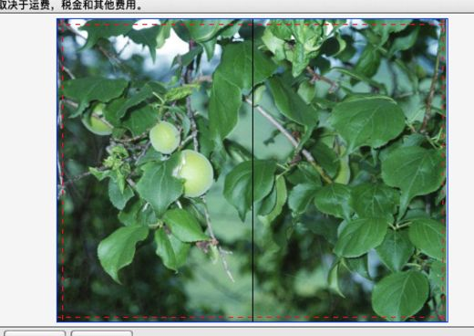
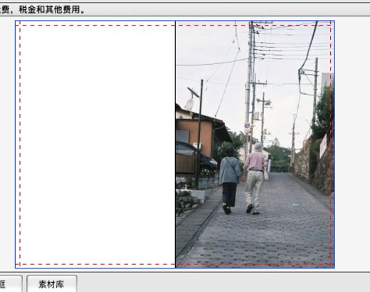
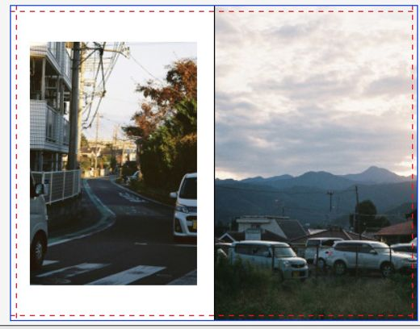
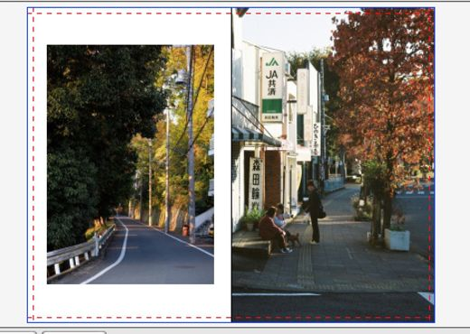
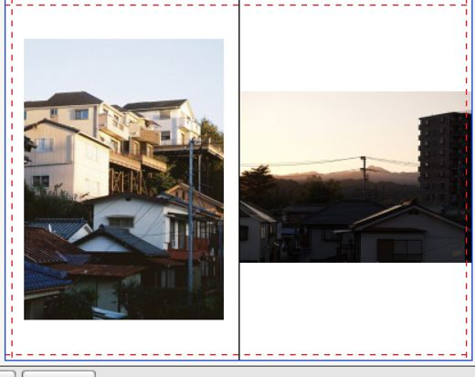
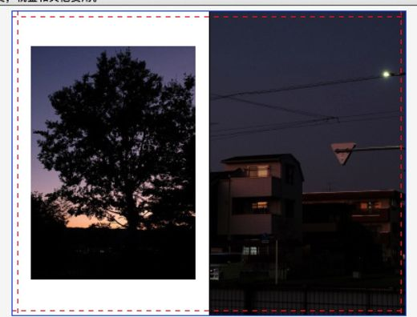

夕 · 封面01 — 封面与封底，黄昏里的小镇

夕 · 林与湖02 — 林间湖光与老树

夕 · 河流03 — 满版跨页，绿岸与河水


夕 · 青梅04 — 满版跨页，枝叶与青果


夕 · 散步05 — 老夫妇的背影

夕 · 云06 — 蓝天与长云

夕 · 两帧07 — 台阶，车窗里的晚霞

夕 · 通学路08 — 骑车的学生们


夕 · 坡道09 — 坡道与山影停车场


夕 · 街道10 — 林荫路与红叶街口

夕 · 全景11 — 黄昏的城镇与远山

夕 · 远眺12 — 逆光里的城镇


夕 · 屋顶13 — 山坡上的住宅

夕 · 逆光14 — 芒草与夕阳

夕 · 落日15 — 山影与橙色的天

夕 · 月升16 — 公寓与半轮月亮


夕 · 入夜17 — 树影与亮灯的窗

夕 · 月夜18 — 最后一页，月亮与树影